Desarrollo de la limpieza de los ordenadores, paso a paso:
Mostrar paso a paso
Paso 1
Desde el menú de “Actividades”, ubicamos el terminal.

Paso 2
Para poder acceder al menú de la terminal, se debe de estar registrado como superusuario. Una vez activado el root, en su terminal coloque – y seguidamente “su”, luego presione la tecla “enter” e introduzca su contraseña de root.

Paso 3
Luego, coloque en el terminal el comando “apt install PROGRAMA”, reemplaza la palabra "programa" por el nombre de la aplicación que desea instalar, para este ejemplo usaremos Blender

Paso 4
La consola le pedirá confirmación de la aplicación que desea instalar, informando del almacenamiento que consumirá. Para continuar, escriba “S”, y luego presione enter.

Paso 5
El programa procederá a descargarse e instalarse, por lo que quedaría solo esperar a que se instale.


Paso 6
Compruebe en su menú de aplicaciones que el programa se haya instalado con éxito.

Ahora que sabe cómo instalar un programa, procedemos con el tutorial para utilizar BleachBit
Instalación de BleachBit
Mostrar paso a paso
Paso 1
Apenas abrimos el programa, nos aparecerá su menú de opciones.

Su esquema dividido en dos secciones, la lista de categorías de archivos a la izquierda y en la derecha encontramos las opciones que integran cada categoría. Podemos dar clic en la casilla de verificación para seleccionarla, o bien dar clic en el nombre de una categoría para seleccionar todas las opciones disponibles.

Paso 2
En el momento en que se selecciones una categoría, BleachBit desplegara una descripción de las opciones dentro de ella.

Paso 3
Cuando seleccionemos los objetos, podemos dar clic en el botón “previsualizar” con el fin de que BleachBit escaneé el sistema de archivos en base a la configuración y opciones que hemos elegido, esto despliega un informe donde veremos la cantidad de archivos a eliminar y la cantidad de espacio en el disco duro que se liberará.

Paso 4
Como mencionamos, al ejecutarse como sudo despliega carpetas del sistema, si ejecutamos BleachBit sin sudo accedemos a las aplicaciones locales del usuario que ha iniciado sesión.

Paso 5
Si estamos seguros de los elementos a eliminar, damos clic en el botón “Limpiar” y se activara la siguiente advertencia.

Paso 6
Damos clic en “Eliminar” y luego del proceso veremos la cantidad de archivos que fueron eliminados, así como la cantidad de espacio recuperado.

Etapa 1 como preparar un USB para la instalación de sistemas operativos
Mostrar paso a paso
Paso 1
Primero accedemos a la página principal de Rufus para proceder con la descarga e instalación del programa.
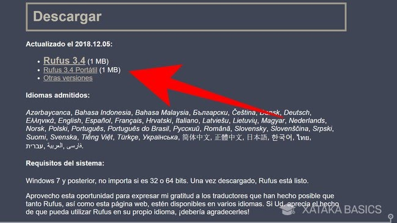Paso 2
Cuando finalice la descarga, haz clic en el icono del archivo .exe de instalación de Rufus. El programa pedirá buscar actualizaciones, lo cual puede llevar un tiempo.
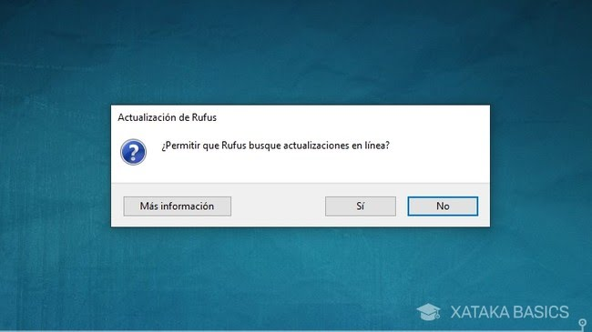Paso 3
Cuando haya terminado de buscar e instalar actualizaciones, abre la aplicación e inserta un dispositivo USB en el ordenador.
Al hacerlo, aparecerán todas las opciones del programa, entre estas la opción de seleccionar el dispositivo USB como unidad de arranque.
Paso 4
Cuando selecciones “Elección de imagen”, busque la opción de ISO.
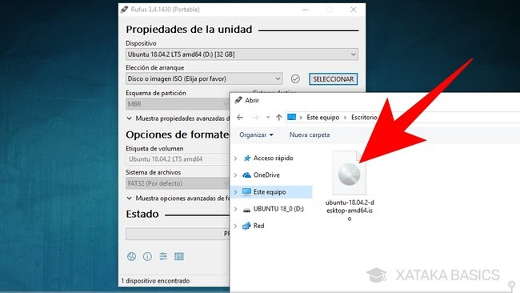Paso 5
Tras elegir la imagen, es opcional seleccionar la opción de “Esquina de partición”.
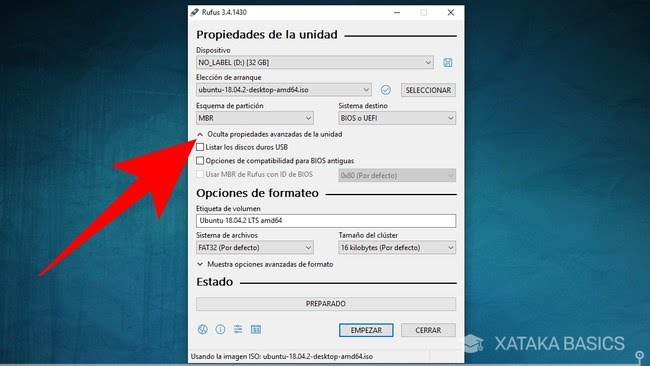Paso 6
El siguiente paso recae en elegir un sistema operativo desde su archivo específico, es importante seleccionarlo antes de instalar la imagen ISO que haya seleccionado. En esta ocasión se usara NTFS.
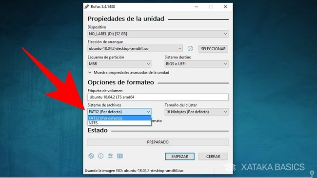Paso 7
Presionas la opción empezar.
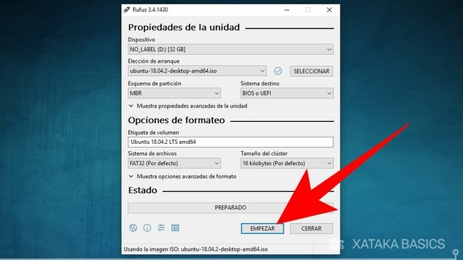Paso 8
En algunos casos hará falta algunos tipos de movimientos extras y Rufus te avisara con un mensaje en el que te lo explican todo claramente.
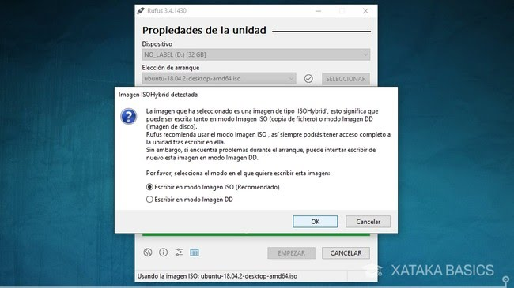Paso 9
Luego, el programa nos pedirá confirmar la escritura en modo imagen. Para proceder con el formateo e instalación, presione “OK”.
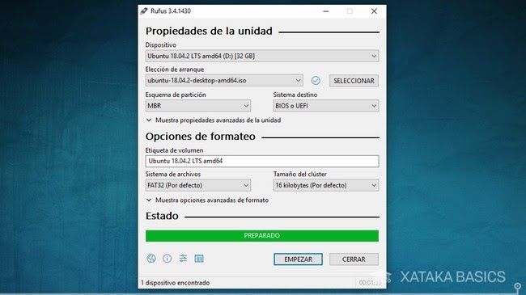Etapa 2 paso a paso de la instalación del sistema operativo Windows 7
Mostrar paso a paso
Paso 1
Inmediatamente después de reiniciar el equipo, presione las Supr, Esc, F2, F9 o F10 durante el reinicio. Al presionar algunas de estas teclas apenas encienda el equipo, se accederá a la BIOS del sistema.
Paso 2
Busque en el menú opciones de arranque del BIOS. El nombre y la ubicación del menú de opciones de BIOS.
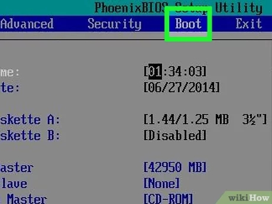Paso 3
Selecciona “USB Drive” o “Removable Drive” como dispositivo principal de arranque de tu computadora.
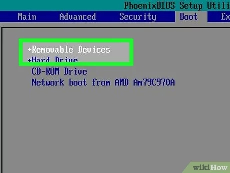Paso 4
Arranca la computadora desde la memoria USB.
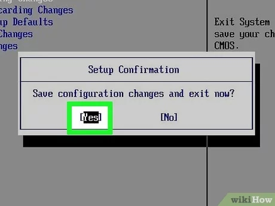Paso 5
Selecciona las opciones de instalación de Windows. Utilice los menús desplegables para seleccionar el idioma, el tipo de teclado y el formato de fecha luego haga clic en “siguiente”.
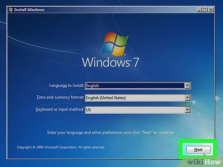Paso 6
Haga clic en el botón instalar.
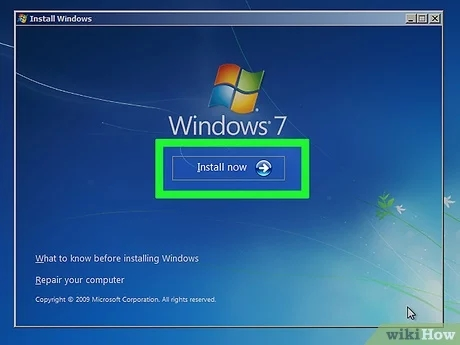Paso 7
Acepte los términos de la licencia.
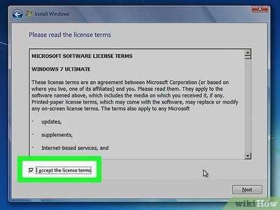Paso 8
Seleccione instalación personalizada. Marca esta opción para hacer una instalación limpia de Windows 7.
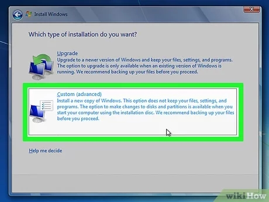Paso 9
Selecciona la unidad y la partición del disco duro en la cual desee instalar Windows 7.
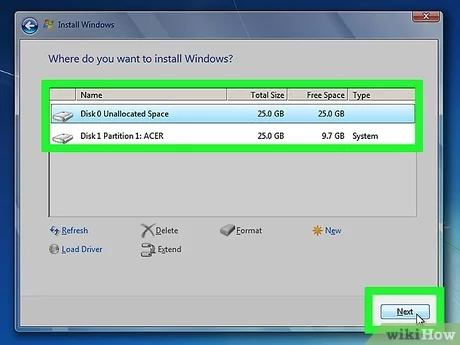Paso 10
Instala Windows en el disco y la partición deseada. Una vez que hayas decidido donde instalar Windows, selecciona la opción correspondiente y haz clic en siguiente.
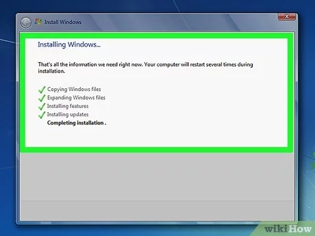Paso 11
Quite la memoria USB una vez que Windows se haya terminado de instalar.
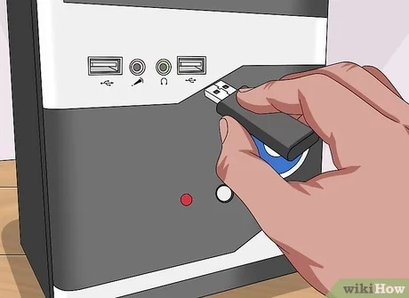Paso 12
Reinicie la computadora después de instalar Windows 7.
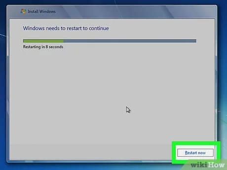Paso 13
Ahora toca configurar Windows después de la instalación. Escriba el nombre de usuario y el nombre del equipó y haga clic en siguiente.
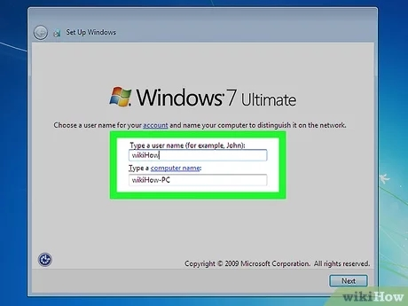Paso 14
Luego sigue la creación de una contraseña, si no quiere crear una contraseña, deje los datos en blanco.
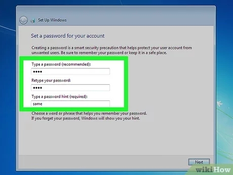Paso 15
Ingrese la clave de producto y haga clic en siguiente. La clave de producto está ubicado en la caja del disco de Windows 7 en case de que haya adquirido el producto en físico.
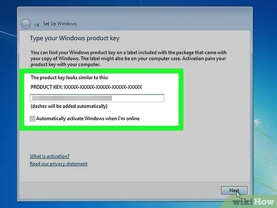Paso 16
Selecciona la configuración de Windows Update. Puedes elegir entre “usar la configuración recomendada” “instalar solo actualizaciones importantes” o “preguntarme más tarde”.
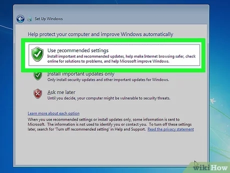Paso 17
Ajuste la hora y la zona horaria.
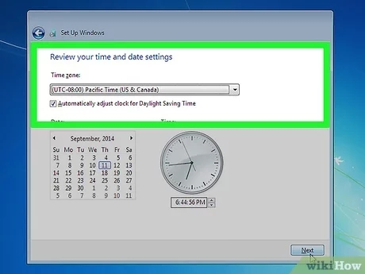Paso 18
Selecciona un tipo de red. Una vez que la computadora se conecte a la red, Windows llegara a cabo un proceso de configuración del escritorio. Si tu computadora se va a conectar a tu propio internet doméstica, red de trabajo o red pública seleccione la deseada.
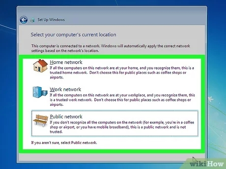Y con esto se finalizó la instalación de Windows.
Etapa 3 paso a paso de la instalación del sistema operativo Linux Canaima
Mostrar paso a paso
Paso 1
Inserte el dispositivo de arranque (USB/DVD/CD) en la máquina a instalar.
Paso 2
Encienda el equipo y espera unos segundos hasta que aparezca el menú de booteo.

Paso 3
Seleccione la opción “Iniciar instalación”.
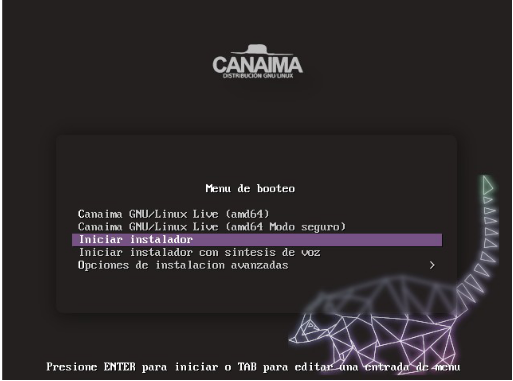Paso 4
Elije la configuración del teclado y presione “continuar”.
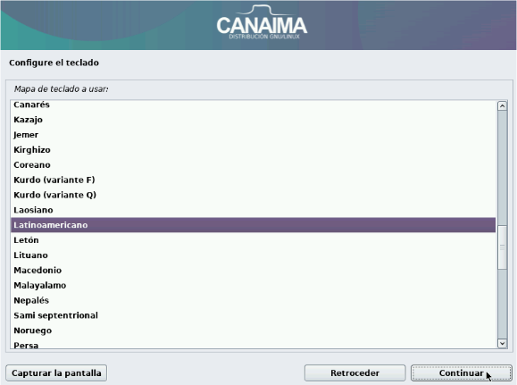Paso 5
Coloque un nombre de identificación al equipo.
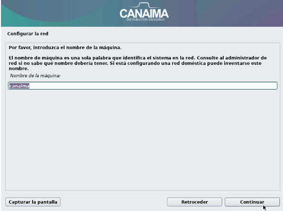Paso 6
Si posee algún dominio puede agregarlo o saltarse este paso si solo es una instalación local.
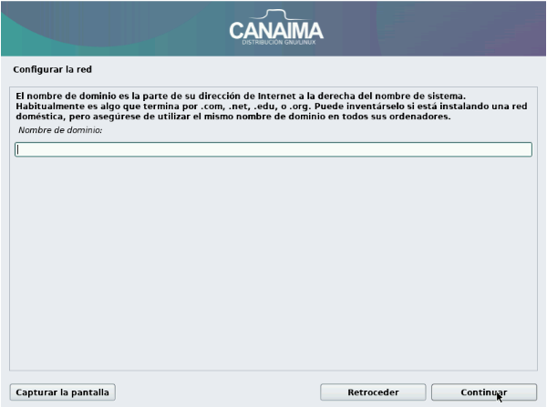Paso 7
Crea tu contraseña de Administrador o Súper Usuario (ROOT).
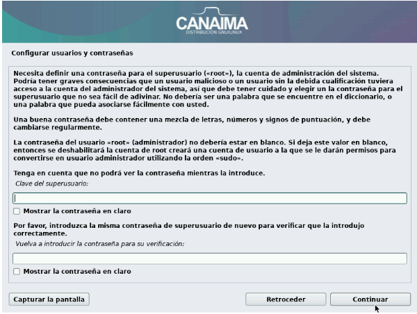Paso 8
Ingrese un nombre de usuario.
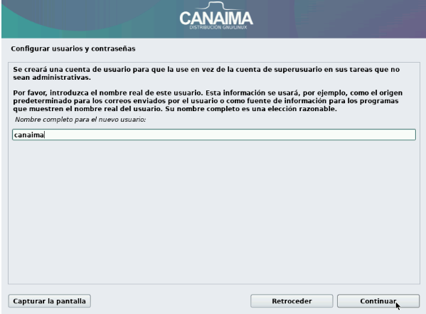Paso 9
Establezca una contraseña de usuario y confírmela en el siguiente campo. Se recomienda utilizar una mezcla de letras, números y signos de puntuación.
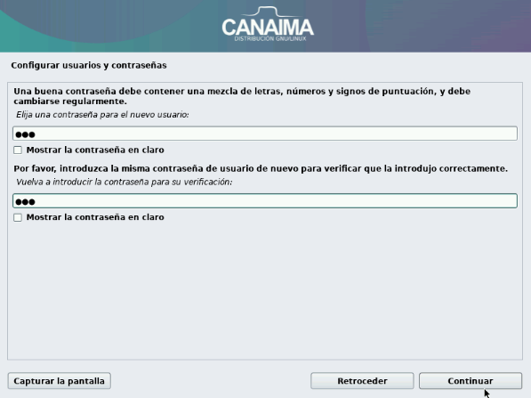Paso 10
En esta pantalla, se recomienda a los principiantes seleccionar la opción “Guiado-Utilizar todo el disco duro”.
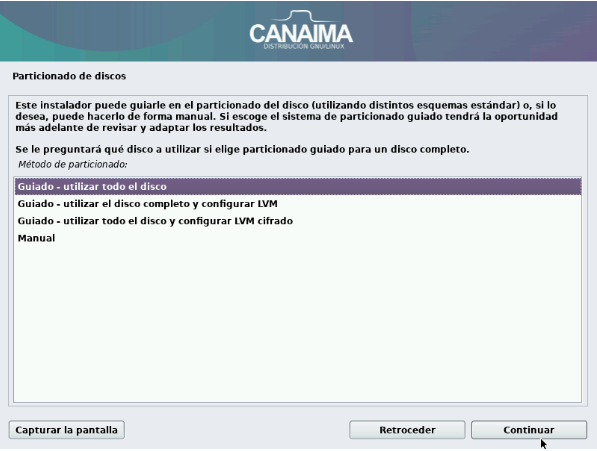Paso 11
Seleccione el disco duro que desea particionar.
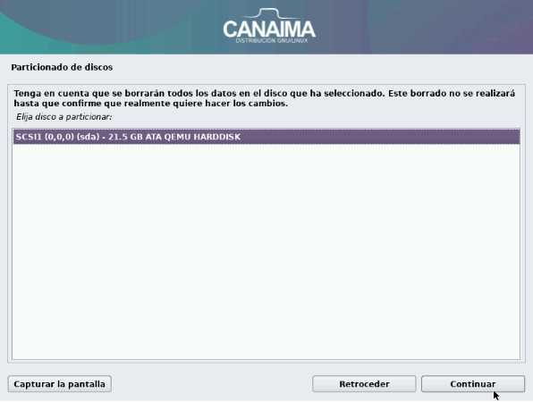 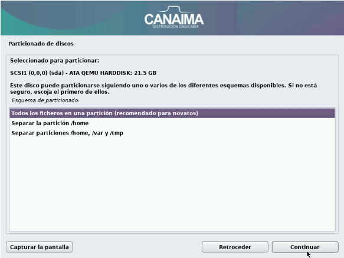Paso 12
Al culminar el particionado, seleccione “Finalizar el Particionado y escribir los cambios en el disco”.
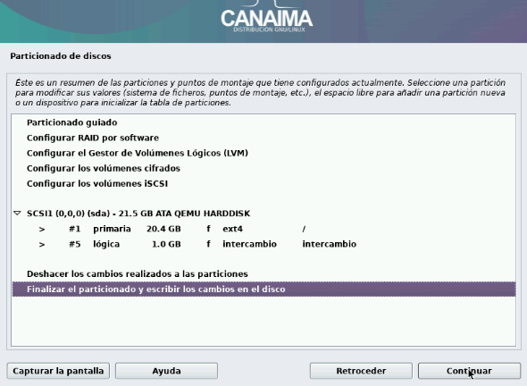Paso 13
Se le preguntará si desea formatear y reescribir los datos en el disco duro donde se realizará la instalación, seleccione la opción “Sí” en la pantalla y presione “Continuar”.
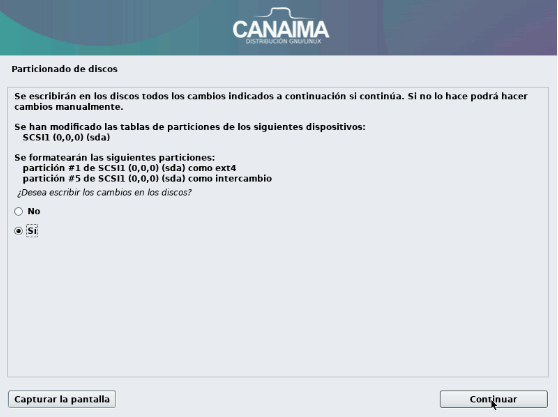 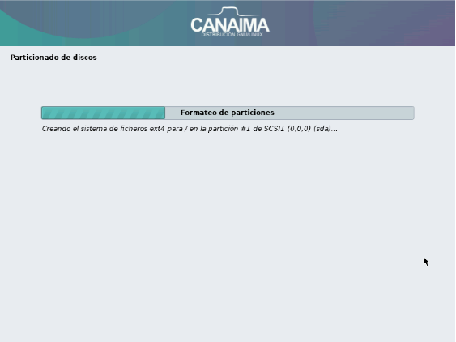Paso 14
El sistema empezará a instalarse. Este paso puede tomar unos minutos.
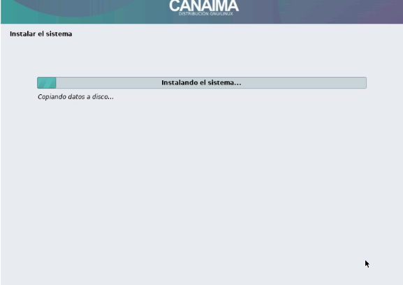 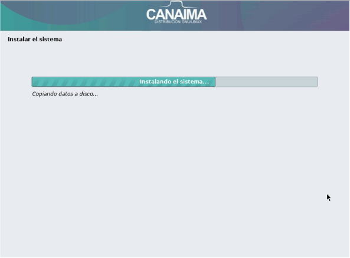Paso 15
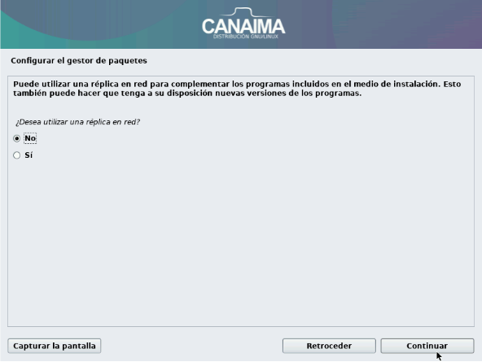 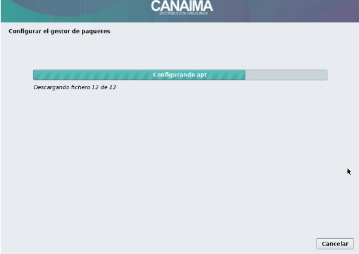Etapa 3 Instalación del gestor de arranque (GRUB). Este paso puede durar algunos minutos.
Mostrar paso a paso
Paso 16
Se le preguntará al usuario si desea instalar el cargador de arranque (GRUB) en el registro principal de arranque,
seleccione la opción “Sí”.
Paso 17
Seleccione el disco duro en el cual se instalará el gestor de arranque.
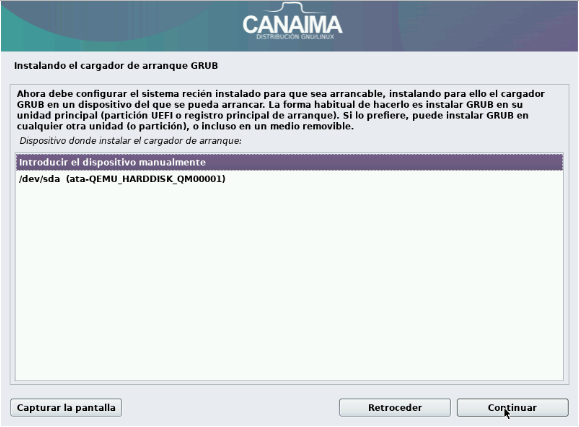Paso 18
A continuación, se inicia el proceso de instalación del gestor de arranque.
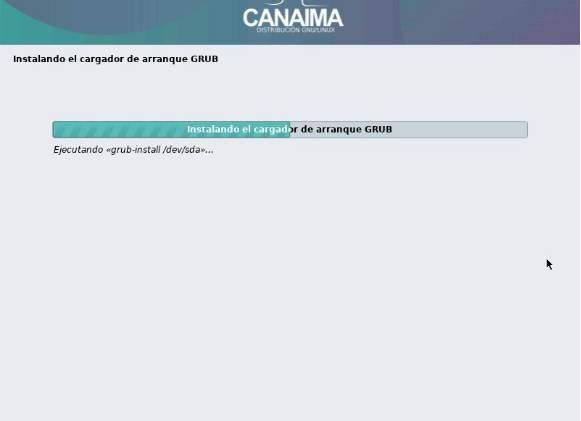Paso 19
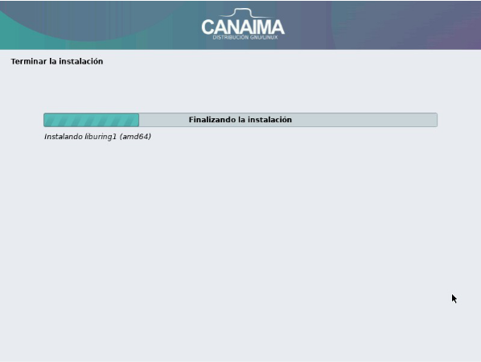Paso 20
En este paso el sistema informa que el sistema fue instalado correctamente, presione “Continuar”.
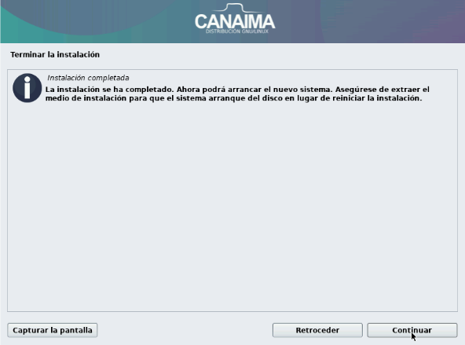Paso 21
Su sistema ha sido instalado exitosamente, ya puede ingresar al sistema.
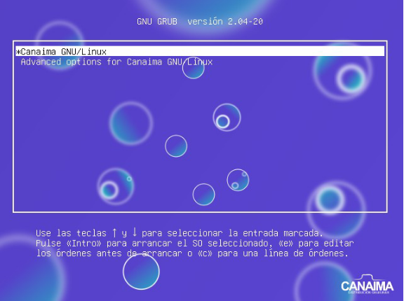